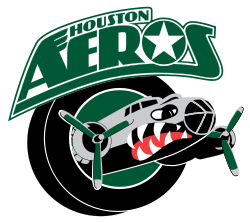
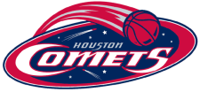

The Summit - Multi-purpose sports arena.

- 1975–1998 - The Summit
- 1998–2003 - Compaq Center
- What is it now? Lakewood Church Central Campus
- The Summit Wiki
Houston Aeros - Houston's profressional ice hockey team.

The Summit - Multi-purpose sports arena.
Astrodome - World's first multi-purpose, domed sports stadium.

Astroworld - World's first multi-purpose, domed sports stadium.

Houston Comets - Houston's Women's National Basketball Association Team. The team was one of the original eight WNBA teams and won the first four championships of the league's existence.
